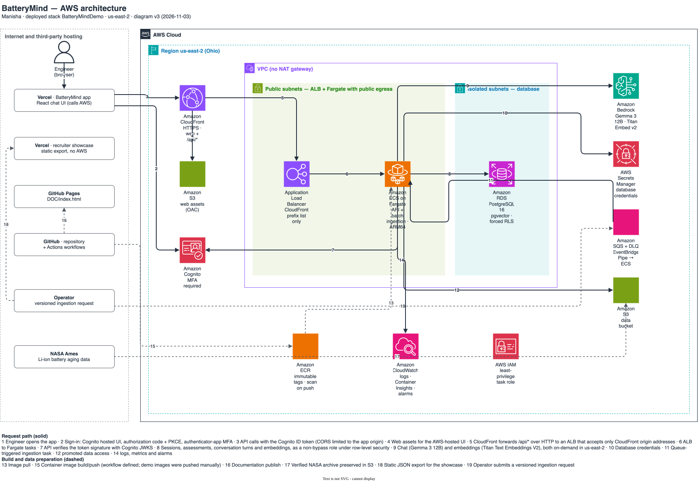

Battery reliability decision intelligence
Evidence that
remembers.
BatteryMind turns authentic NASA Ames laboratory measurements into transparent degradation analysis, experimental RUL baselines, versioned engineering classifications, and evidence-linked assessment memory.
The business problem
Analysis history is part of the engineering evidence.
Battery teams need to see degradation and understand why a decision changed across sessions. BatteryMind preserves the measurement cutoff, policy and model versions, supporting values, prior assessment, and correction state. It does not infer field safety from laboratory aging experiments.
Verified data
NASA Ames Li-ion battery aging experiments
The NASA experiment stopped relevant 2 Ah cells at 1.4 Ah, a 30% capacity fade. BatteryMind labels that threshold as experiment-specific and does not generalize it to unrelated products.
Architecture
Private production and public demonstration stay separate.

The AWS system serves the web app and /api through CloudFront. The API runs on ECS Fargate
behind a load balancer that accepts only CloudFront traffic, validates Cognito ID tokens (MFA required),
stores sessions, assessments, conversation turns, and Titan embeddings in private RDS PostgreSQL with
pgvector and forced row-level security, and calls Amazon Bedrock models that run in us-east-2.
The Vercel showcase uses only a versioned static export and works without AWS.
Method
Measured, derived, and predicted values remain distinct.
| Layer | Method | Evidence rule |
|---|---|---|
| Measurements | NASA MATLAB cycles and samples | Preserve source indices, units, hashes, and missingness |
| SOH | Measured capacity ÷ 2 Ah × 100 | Derived and cutoff-aware |
| RUL | Linear trend with residual bootstrap interval | Prediction, evaluated chronologically |
| Decision | Versioned deterministic SOH bands | LLM explains but cannot classify |
| Memory | Structured assessments plus pgvector recall | Structured evidence remains authoritative |
Verified results
Release claims follow executed gates.
Every figure in this section is generated from a report in the repository
(scripts/build_docs_page.py). Gates use only PASS, FAIL, or BLOCKED.
| Gate | Scope | Status |
|---|---|---|
| G0 | Product and requirements | PASS |
| G1 | Real dataset validation | PASS |
| G2 | AWS architecture | PASS (local design and IaC) |
| G3 | Battery analytics | PASS |
| G4 | Persistent memory | PASS |
| G5 | AWS production application | PASS |
| G6 | Independent showcase | PASS |
| G7 | Documentation and release | BLOCKED |
RUL baselines, chronological evaluation
Mean absolute capacity error (Ah) on cycles after each cell's training cutoff; lower is better. The linear model beats persistence on some cells and not others, and the dataset has four cells, so no broad generalization is claimed.
| Cell | Trained through cycle | Linear MAE | Persistence MAE |
|---|---|---|---|
| B0005 | 100 | 0.0227 | 0.1119 |
| B0006 | 100 | 0.1351 | 0.1250 |
| B0007 | 100 | 0.0276 | 0.0890 |
| B0018 | 79 | 0.0511 | 0.0566 |
AWS ingestion run
Run aws-20261106-v14 on ECS Fargate downloaded and checksum-verified the NASA archive,
rebuilt the Parquet outputs in 13.5 s, and matched the
committed evidence byte for byte, so it was promoted.
Live AWS end-to-end run
24 of 24 checks passed on 2026-11-06 against the deployed stack. Median latency from the test client over the public URL (includes network time): chat reply 1725 ms; assessment with Bedrock explanation and embedding 1653 ms.
All live checks
- Cognito login with enforced MFA for two users: PASS
- session created: PASS
- assessment at cycle 40 stored with Bedrock explanation: PASS
- assessment at cycle 120 stored with Bedrock explanation: PASS
- chat recalls prior assessments (semantic + recency): PASS
- chat found semantic hits in pgvector: PASS
- assessment memory recalled across two sessions: PASS
- live correction supersedes the prior assessment: PASS
- concurrent idempotent writes return one assessment: PASS
- context compressed within budget: PASS
- second turn in same session: PASS
- short-term memory persisted four turns: PASS
- cross-user: other user cannot read turns: PASS
- cross-user: other user sees no assessments: PASS
- cross-user: other user cannot chat in the session: PASS
- cross-user: other user cannot delete assessment: PASS
- anonymous chat rejected: PASS
- oversized message rejected: PASS
- ECS task replaced (container restart): PASS
- after restart: assessments recalled: PASS
- after restart: conversation recalled: PASS
- after restart: chat still recalls memory: PASS
- deletion removes assessment: PASS
- usage metrics recorded: PASS

Live application
An assistant that answers from measurements and remembers.
The BatteryMind app is hosted on Vercel and calls the AWS API. After sign-in it answers questions from the measured NASA data, recalls your earlier saved assessments, and shows what context it used. The AWS stack is run on a schedule to limit cost, so the app may be offline; the independent showcase below always works.
Independent showcase
Explore the verified measurements without signing in.
The static Vercel application builds from a versioned export of the verified NASA measurements and has no connection to AWS databases or private memory.
Security, cost, and limits
Security, cost, and open items.
Production uses Cognito with required MFA, least-privilege roles, private database networking, encryption, Secrets Manager, immutable images, bounded retries, log retention, CloudWatch alarms, and OpenTelemetry tracing to AWS X-Ray.
The dataset is small and laboratory-specific; model performance cannot establish broad product generalization. RDS and the load balancer create idle cost even when ECS scales to zero, so the AWS stack runs on a schedule. Open items recorded in the gate files:
- G5 GitHub Actions OIDC deploy role: BLOCKED — an AWS Organizations SCP denies IAM OIDC provider creation for the project account role; deployments are run manually from reviewed
cdk diffoutput. - G7 GitHub Actions OIDC: BLOCKED by an AWS Organizations SCP if live AWS deployment is requested again; manual deployment from a reviewed CDK diff remains documented.